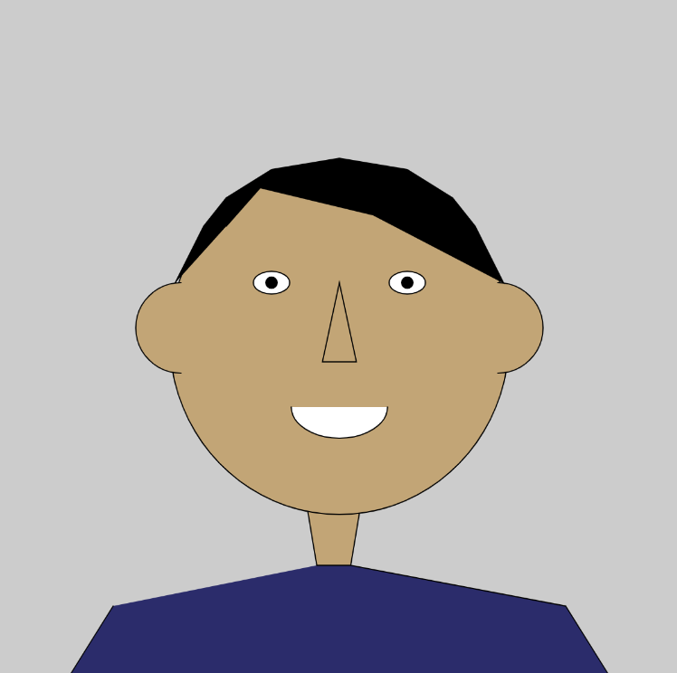

This is a self portrait I have drawn using p5.js. It is a variant of the javascript language. I had never drawn any art projects using a coding language before, so it was a new experience for me. It's a very abstracted version of how I look in real life, kind of like the Mii characters on the Nintendo Wii system. I had fun working on it and making myself out of simple shapes.
This is the code I used for the self portrait. Copy and paste it into p5.js.
function setup() {
createCanvas(600, 600); }
function draw() {
background(204);
point(300,300);
fill(194, 165, 118)
quad(280,500,310,500,320,440,270,440);
fill(43, 44, 107)
beginShape();
vertex(280, 500);
vertex(310, 500);
vertex(500, 536);
vertex(540, 600);
vertex(60, 600);
vertex(100, 536);
endShape();
fill(194, 165, 118)
ellipse(300, 300, 300, 310);
arc(160,290,80,80, HALF_PI, PI+HALF_PI);
arc(440,290,80,80, PI+HALF_PI, HALF_PI);
triangle(285,320,315,320,300,250)
fill(255)
ellipse(240,250,32,20)
ellipse(360,250,32,20)
arc(300, 360, 85, 55, 0, PI);
fill(0)
beginShape();
vertex(155, 250);
vertex(180, 200);
vertex(200, 175);
vertex(240, 150);
vertex(300, 140);
vertex(360, 150);
vertex(400, 175);
vertex(420, 200);
vertex(445, 250);
vertex(330, 190);
vertex(230, 166);
vertex(200, 200);
endShape();
ellipse(360,250,10,10)
ellipse(240,250,10,10)
}